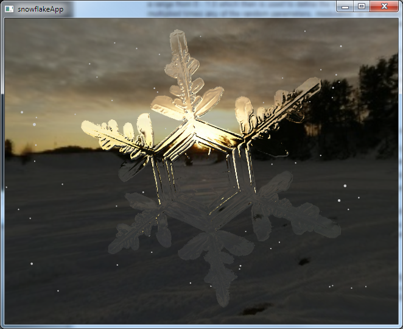
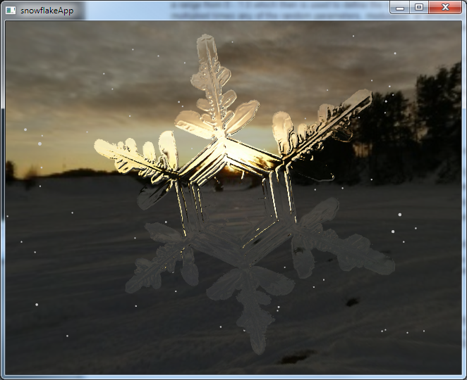

a snowflake simulator
Kenneth Libbrecht at CalTech has done some amazing research on the physics of snowflake formation. The image to the left links to an animated gif showing time-lapse photography of a lab-grown snowlake.
Since viewing the formation of snowflakes in the wild isn't possible currently, I thought an interesting graphics project would be to try to simulate the growth of snowflakes. Although my growth simulation isn't physics based, the GLSL shading effects are based on refraction and thin-film interference effects.
 
